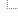

调用树
Session:
TrainTicketApplication (MySQL)
导出时间:
2026年11月3日 CST 09:43:19
JVM time:
线程选择:
所有线程组
线程状态:
就绪(Runnable)
聚合级别:
方法
92.
0% - 206 m HTTP: /
login
3.
8% - 515 s org.
apache.
tomcat.
util.
threads.
TaskThread$
WrappingRunnable.
run
2.
8% - 373 s HTTP: /
trains/
search
1.
4% - 185 s HTTP: /
trains

197 s 直接调用未分析类的方法